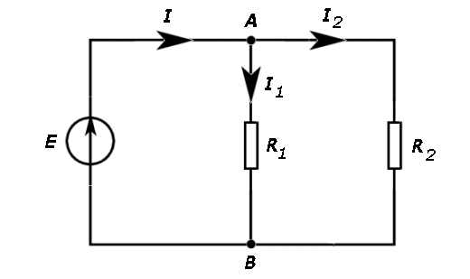
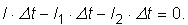
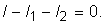
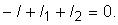
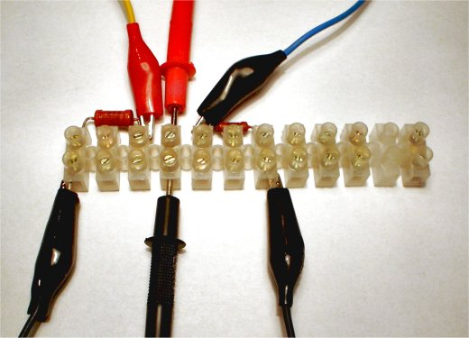
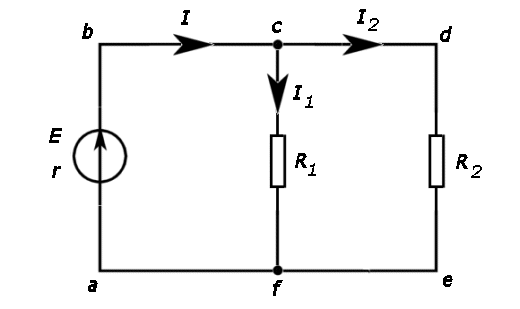
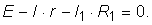

Numim reţea electrică un circuit electric care conţine
ramificaţii.
Numim reţea electrică un circuit electric care conţine
ramificaţii.
Producerea şi utilizarea curentului continuu |
Legile circuitelor electrice |
B-4. |
Legile lui Kirchhoff |
Asemenea reţelelor de drumuri, circuitele electrice complexe conectează între ele numeroase elemente de circuit: generatoare, rezistori, becuri, motoare electrice etc.
Numim reţea electrică un circuit electric care conţine
ramificaţii.
În circuitul din figura 4−1, curentul electric debitat de generator se ramifică în punctul A: o parte dintre purtătorii de sarcină trec prin rezostorul R1, cealaltă parte prin R2.

Figura 4-1. O reţea electrică (circuit cu ramificaţii).
Numim nod al unei reţele electrice un punct în care curentul
se ramifică.
Reţeaua din figura 4−1 are două noduri, notate A, respectiv B.
 Provocarea 4-1
Provocarea 4-1
Care te aştepţi să fie relaţia dintre intensităţile curenţilor care se întâlnesc în nodul A al reţelei din figura 4−1?
Într−un interval de timp Δt, soseşte în nodul A cantitatea de sarcină I·Δt. În acelaşi interval de timp, pe ramura rezistorului R1, părăseşte nodul A cantitatea de sarcină I1·Δt, iar pe ramura rezistorului R2, nodul A este părăsit de cantitatea de sarcină I2·Δt
Purtătorii de sarcină doar trec prin nodul A. În nodul A nu se separă şi nu se recombină sarcini. Astfel, bilanţul cantităţilor de sarcină care sosesc şi părăsesc nodul A în acelaşi interval de timp este:

Simplificând factorul comun Δt, obţii relaţia dintre intensităţile curenţilor care se întâlnesc în nodul A:
|  | (1) |
Generalizând astfel de observaţii, germanul Gustav Robert Kirchhoff a formulat, în 1847:
Prima lege a lui Kirchhoff (legea curenţilor): Suma algebrică a intensităţilor
curenţilor care se întâlnesc într−un nod este nulă.
Curenţii îndreptaţi înspre nod sunt consideraţi pozitivi (aduc sarcină în nod), iar curenţii care părăsesc nodul sunt consideraţi negativi (duc sarcină din nod).
Prima lege a lui Kirchhoff este o consecinţă directă a conservării sarcinilor electrice: purtătorii de sarcină doar trec printr−un nod (sarcinile nu se separă şi nu se recombină într−un nod).
Provocarea 4-2
Care te aştepţi să fie relaţia între intensităţile curenţilor din nodul B al reţelei din figura 4−1?
Conform convenţiei alese pentru intensităţile curenţilor, utilizând prima lege a lui Kirchhoff pentru nodul B, obţii:
|  | (2) |
Sensurile tuturor curenţilor faţă de nodul B sunt inversaţi, însă relaţia (2) este echivalentă cu relaţia (1)! Aplicarea legii curenţilor şi în nodul B nu conduce la o ecuaţie independentă: curenţii care ies din nodul A intră în nodul B, iar curenţii care ies din nodul B intră în nodul A.
Într−o reţea cu N noduri, poţi izola mental un nod oarecare. Curenţii care intră în acest nod provin de la celelalte N-1 noduri, iar curenţii care părăsesc acest nod intră în celelalte N-1 noduri.
Aplicarea legii curenţilor pentru acest nod nu conduce la o ecuaţie independentă de celelalte N-1, obţinute prin aplicarea legii curenţilor în celelalte noduri. Tehnic, ecuaţia curenţilor în nodul considerat este suma algebrică a ecuaţiilor curenţilor pentru celelalte noduri.
Într−o reţea cu N noduri, aplicarea primei legi a
lui Kirchhoff furnizează N-1 ecuaţii independente.
 Activitatea experimentală 4-1
Activitatea experimentală 4-1
Investighează ramificarea curenţilor într−o reţea electrică. Lucrează în echipă.
Pasul 1. Realizaţi circuitul din figura 4−1. Folosiţi o baterie cu t.e.m. de câţiva volţi şi rezistori cu rezistenţe de ordinul sutelor de ohmi. Puteţi realiza cu uşurinţă circuite electrice complexe folosind o regletă cu contacte (figura 4−2).

Figura 4-2. Realizarea circuitelor complexe pe o regletă cu contacte.
Pasul 2. Intercalaţi, rând pe rând, un multimetru setat ca ampermetru pe diferite trasee care se întâlnesc într−un nod.
Pasul 3. Comparaţi, pentru fiecare nod, bilanţul intensităţilor măsurate şi bilanţul anticipat de prima lege a lui Kirchhoff.
În oricare reţea electrica există trasee închise (bucle).
Numim ochi al unei reţele electrice oricare traseu închis în
acea reţea.
Provocarea 4-3
Câte ochiuri identifici în reţeaua din figura 4−1?
Cu notaţiile din figura 4−3, traseele abcfa, fcdef şi abcdefa sunt ochiuri ale reţelei: pentru fiecare, punctul de plecare coincide cu punctul de sosire.

Figura 4-3. Identificarea ochiurilor reţelei.
Provocarea 4-4
Dacă parcurgi un drum cu urcuşuri şi coborâşuri, dar te întorci în punctul de care ai plecat, eşti mai sus, mai jos sau la aceeaşi înălţime cu cea de plecare?
Dacă un purtător de sarcină ar parcurge un ochi al unei reţele (cum este abcfa din figura 4−3), ar reveni în punctul de plecare la acelaşi potenţial electric cu cel de la care a plecat.
Provocarea 4-5
Care te aştepţi să fie relaţia dintre creşterile şi descreşterile de potenţial electric pentru un ochi cum este abcfa al reţelei din figura 4−3?
Trecând de la a la b prin generatorul de t.e.m. E, potenţialul electric al purtătorilor de sarcină creşte cu E şi scade cu I·r.
Trecând de la c la f prin rezistorul R1, potenţialul scade cu I1·R1.
Revenind în punctul de plecare, "câştigul" de potenţial este nul:

Generalizarea acestui tip de observaţii constituie:
A doua lege a lui Kirchhoff (legea tensiunilor): Suma
algebrică a tensiunilor dintr−un ochi de reţea este nulă.
Creşterile de potenţial sunt considerate pozitive (sporesc energia de interacţiune electrică pentru o sarcină pozitivă), iar descreşterile negative (diminuează energia de interacţiune electrică pentru o sarcină pozitivă).
A doua lege a lui Kirchhoff este o consecinţă directă a conservării energiei: revenind în punctul de plecare, energia de interacţiune este aceeaşi.
Provocarea 4-6
Aplică a doua lege a lui Kirchhoff şi pe celelalte două ochiuri ale reţelei din figura 4−3. Câte ecuaţii independente obţii?
Toate laturile ochiului abcdefa din figura 4−3 sunt deja conţinute în celelalte două, astfel că aplicarea legii pentru acest ochi nu furnizează o ecuaţie independentă.
Numim ochi independent al unei reţele electrice un ochi care
are cel puţin o latură necomună cu celelalte.
Doar ochiurile independente furnizează ecuaţii independente.
Într−o reţea cu M ochiuri independente, legea tensiunilor
furnizează M ecuaţii independente.
Activitatea experimentală 4-2
Investighează variaţiile de potenţial pentru ochiurile reţelei pe care a−i realizat−o în activitatea experimentală precedentă.
Compară bilanţul variaţiilor de potenţial cu bilanţul anticipat de legea tensiunilor.
Aplicarea legilor lui Kirchhoff (legea curenţilor şi legea tensiunilor) îţi permite rezolvarea completă (determinarea tuturor intensităţilor curenţilor) a oricărei reţele electrice, oricât de complexă ar fi aceasta!
Provocarea 4-7
Pentru reţeaua din figura 4−1, E=4,5 V, R1=100 Ω, R2=200 Ω. Rezistenţa internă a generatorului şi a firelor de legătură este neglijabilă.
Cât te aştepţi să fie intensităţile curenţilor în această reţea?